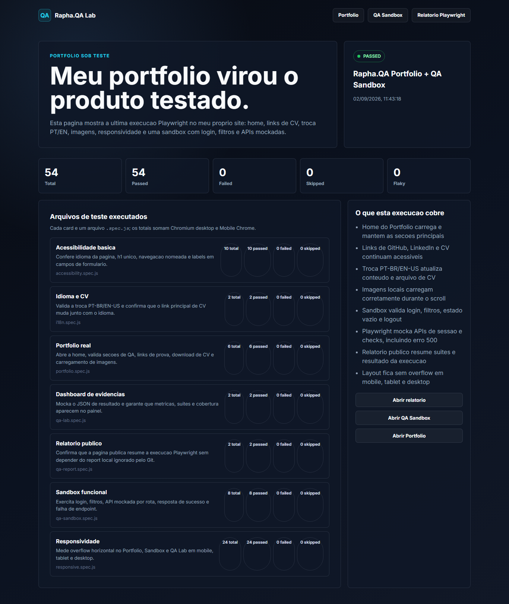
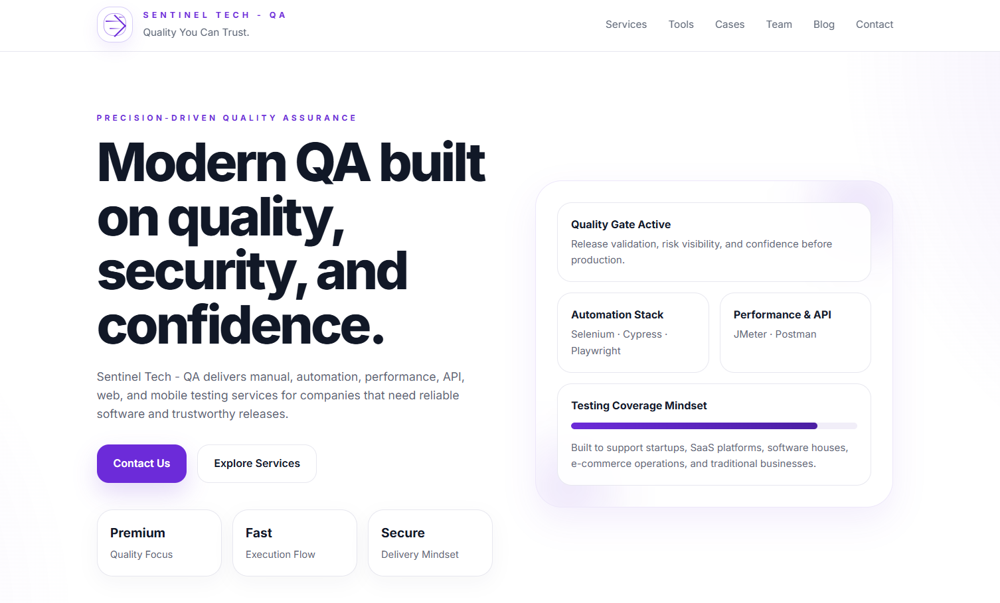

Cobertura de fluxos críticos e jornadas completas.
Quality Engineering • Automation • Operational Systems
QA Engineering
focado em qualidade
e confiabilidade.
Atuo na validação de aplicações web com automação Playwright, testes de API e análise operacional para garantir releases confiáveis e experiências consistentes.
Ver versão web do CV ↗
QUALITY OPS
O que eu entrego
Validações de contrato, regras e integrações.
Análise de causa raiz e melhoria contínua.
Automação inteligente para acelerar entregas.
100+
testes
6
suítes
2
projetos live
CI/CD
ativo
Tecnologias e
Ferramentas
Playwright
TypeScript
JavaScript
Node.js
API
GitHub
Jenkins
Allure
Sobre Mim
Como atuo
na engenharia
de qualidade.
Minha experiência combina QA, automação, investigação de falhas, análise operacional e colaboração multidisciplinar para aumentar a confiabilidade das entregas e reduzir riscos antes do release.
Investigação
Investigação e reprodução de bugs complexos em aplicações web corporativas. Isolamento de causa raiz e documentação clara para acelerar a resolução.
Validação
Validação de fluxos funcionais, regressão, estados de UI e integrações entre sistemas. Garantia de que o produto entrega o que foi planejado, em todas as camadas.
Colaboração
Comunicação técnica eficiente entre suporte, produto, QA e desenvolvimento. Trabalho conjunto para entender, priorizar e resolver problemas com agilidade.
Melhoria Contínua
Mentalidade orientada a dados, rastreabilidade, estabilidade e qualidade contínua. Processos e automações que evoluem junto com o produto e com o time.
Automação
Automação
como engenharia
de qualidade.
Desenho e implemento soluções de automação confiáveis para validar o que importa, reduzir riscos de regressão e acelerar entregas com segurança e previsibilidade.
- Cobertura inteligente dos fluxos críticos
- Feedback rápido para times de desenvolvimento
- Qualidade contínua em cada etapa do ciclo
Playwright E2E
Fluxos críticos automatizados
Automação de jornadas reais, estados da interface, autenticação e comportamento cross-browser com Playwright.
API Validation
Contratos e respostas confiáveis
Validação de endpoints, payloads, status codes e consistência funcional entre camadas.
Regression Strategy
Cobertura contra regressões
Organização de suítes para proteger funcionalidades principais e reduzir risco em mudanças.
AI-Assisted QA
Aceleração com IA
Uso de IA para apoiar análise, documentação, geração de cenários e investigação técnica com revisão humana.
Stack
Ecossistema Técnico.
Ferramentas organizadas por capacidade operacional,
não por lista genérica de ferramentas.
QA & Analysis
Estratégias e técnicas para garantir qualidade em todas as camadas do produto.
Functional TestingExploratory TestingBug InvestigationRegression TestingTest Planning
Automation
Automação de testes e validações para aceleração de ciclos e confiabilidade.
PlaywrightJavaScriptTypeScriptNode.jsE2E Workflows
API & Systems
Testes e integração de APIs e sistemas para garantir estabilidade e segurança.
REST APIsAPI TestingPostmanChrome DevToolsLogsSQL
CI/CD & DevOps
Integração contínua e entrega automatizada com qualidade em cada etapa.
GitHub ActionsCI/CD PipelinesJenkinsGitHub PagesDeploy Automation
Workflow & Collaboration
Gestão de tarefas, documentação e colaboração para mais eficiência e alinhamento.
JiraJQLGitGitHubAgileDocumentation
Web Foundations
Fundamentos e boas práticas para construção, teste e depuração de aplicações web.
HTMLCSSResponsive TestingFront-end Debugging
Stack em constante evolução para acompanhar tecnologia e necessidades do negócio.
Sistemas
Sistemas e Projetos.
Projetos reposicionados como sistemas de validação, operação e aprendizado técnico aplicado.

Automation Showcase
Playwright QA Lab
Dashboard interativo para acompanhamento de testes E2E, métricas de qualidade e integração contínua.

Flagship Ecosystem
Sentinel Tech QA
Plataforma institucional e ecossistema de qualidade para comunicar QA, automação e fluxos assistidos por IA.
Flagship Ecosystem
Rapha.QA — Portfólio
Portfólio bilíngue de Quality Engineering com tema escuro, cards interativos e integração com CV e LinkedIn.
Mais projetos e experimentos em constante evolução.
Experiência
Minha trajetória
em operações
e qualidade.
Atuei por anos em operações críticas, suporte e análise de sistemas, evoluindo de ambientes de alta complexidade até me especializar em qualidade de software e automação.
- Investigação de incidentes
- Análise de sistemas
- Operações e indicadores
- Engenharia de qualidade
- Automação E2E com Playwright e Cypress
- Testes funcionais, regressão e APIs REST
- Investigação e documentação de bugs
- Colaboração com Product, Design e Desenvolvimento
- Gestão de operações e rotinas críticas
- Análise de indicadores e melhoria contínua
- Estruturação de processos e padronizações
- Liderança de equipes e treinamentos
- Investigação e resolução de incidentes críticos
- Troubleshooting avançado e análise de logs
- Diagnóstico de falhas em sistemas complexos
- Suporte a equipes de desenvolvimento
- Monitoramento de sistemas e serviços SaaS
- Análise de fluxos e identificação de melhorias
- Suporte técnico a usuários internos
- Documentação e controle de processos
Evolução contínua em qualidade, automação e excelência operacional.
Contato
Vamos construir
qualidade
juntos.
Estou aberto a novas oportunidades PJ em QA, automação, Quality Engineering e validação de sistemas.
- Disponível para projetos e parcerias
- Atuação 100% remota
- Resposta em até 24h
Escolha o melhor canal para conversar